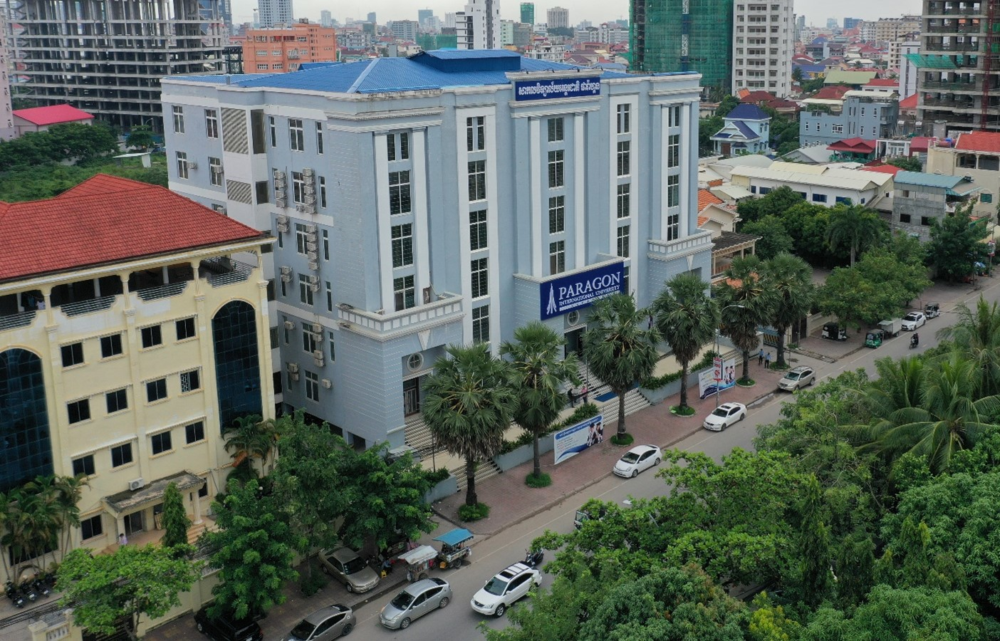
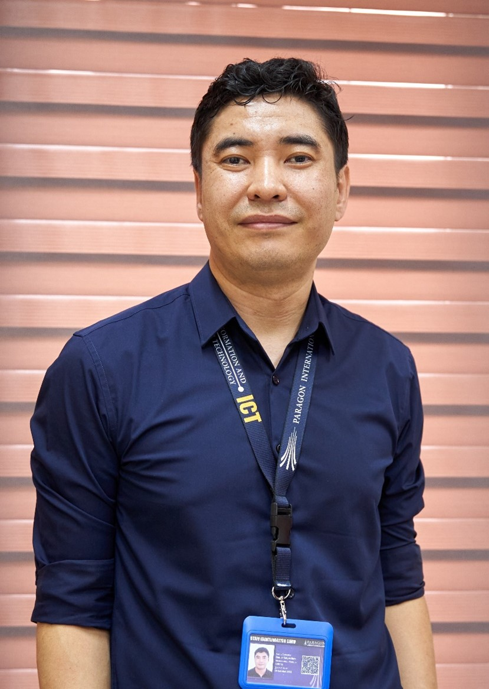

Paragon International University - Cambodia
Partner Country: Cambodia
Cambodia: A Land of Opportunity for AI and Sustainability
Geography and Environment: Located in Southeast Asia, Cambodia is known for its rich history, stunning landscapes, and diverse ecosystems. The country is home to the famous Angkor Wat temple complex, vast rainforests, fertile plains, and the mighty Mekong River. Cambodia's environmental resources are vital to its economy and the livelihoods of its people, but these resources are increasingly under threat due to deforestation, climate change, and water scarcity.
Environmental Challenges
Cambodia faces several environmental challenges that make it a focal point for sustainability initiatives:
- Deforestation: Rapid logging and land clearing for agriculture have led to significant forest loss, threatening biodiversity and natural habitats.
- Water Management: The Mekong River, a lifeline for millions, faces issues like flooding, drought, and pollution, making sustainable water management essential for Cambodia’s future.
- Climate Change: Cambodia is highly vulnerable to the impacts of climate change, including rising temperatures, changing rainfall patterns, and extreme weather events that disrupt agriculture and food security.
Education and Development
Cambodia has made significant strides in education and economic development in recent decades. However, access to quality education, particularly in rural areas, remains a challenge. Integrating AI into the education system can enhance learning outcomes, digital literacy, and promote sustainability-focused education that empowers the younger generation to tackle environmental issues.
AI and Sustainability in Cambodia
With its unique environmental challenges and developing educational infrastructure, Cambodia provides a fertile ground for implementing AI-driven solutions. AI can:
- Help monitor deforestation and biodiversity loss in real-time using satellite imagery and machine learning.
- Improve water management by predicting flood risks and managing water resources more effectively.
- Support educational initiatives that focus on sustainability, empowering students with knowledge and tools to protect their environment.
Cambodia’s Role in the SustAInability Project
As a partner country, Cambodia plays a pivotal role in shaping the direction of our AI projects. We are working closely with local institutions, government bodies, and environmental organizations to ensure that our solutions are tailored to Cambodia’s specific needs. Our collaboration aims to protect Cambodia's rich natural heritage while supporting sustainable development through innovative educational programs.
About Paragon International University
Paragon International University, established in 2010, is a leading private higher education institution in Cambodia. Through its dedication to innovation and quality education, Paragon International University aims to be a leader in higher education in Cambodia and the ASEAN region.
Offering 11 undergraduate programs, including Civil Engineering, Computer Science, Business Administration, and Political Science, Paragon International University prepares students with the skills needed to thrive in the global economy. Its core values—Responsibility, Integrity, Discovery, and Excellence—are reflected in the university's commitment to fostering socially responsible and globally aware graduates.
Paragon International University has developed strong international partnerships with institutions around the world and continues to expand its global outlook. Through its dedication to innovation and quality education, Paragon International University aims to be a leader in higher education in Cambodia and the ASEAN region.
Key Personnel at Paragon International University
Daniiar SATYBALDIEV, PhD
Daniiar Satybaldiev is a full-time lecturer at the Department of Computer Science and the Director of the ERP and Web Development Department at Paragon International University, Cambodia. He holds a Ph.D. in Computer Science from International Black Sea University, Tbilisi, Georgia (2016), and both Bachelor's and Master's degrees in Electronics Engineering from Ala-Too International University, Bishkek, Kyrgyzstan (2009).
With over 10 years of teaching experience in Electronic Engineering and Computer Science, Daniiar moved to Cambodia in 2019 to continue his academic career at Paragon International University. His research interests include digital systems design, blockchain technologies, and AI integration into ERP systems. Daniiar has participated in various international workshops and conferences in Turkey, Poland, the United States, Malaysia, and Singapore.
Currently, he is conducting research on integrating artificial intelligence into ERP systems to enhance functionality and improve educational environments.
Puthearath CHAN, PhD
Dr. Puthearath CHAN has over 12 years of work experience as a researcher, university lecturer, senior technical officer, and national coordinator for various projects on green and circular economy, urban sustainability, and climate change, with governmental and non-governmental organizations, national and international universities, as well as UN Agencies, such as UNCDF, UNIDO, UNDP, etc. He has worked as a senior technical officer for more than 10 years at the Department of Green Economy (formerly Division of Green Economy and Investment), Ministry of Environment/ National Council for Sustainable Development.
Dr. CHAN is a member of the National Steering Committee (NSC) Secretariat for the United Nations Partnership for Action on Green Economy (UN PAGE) in Cambodia, which is led by the Ministry of Environment and supported by the five UN Agencies (UNDP, UNIDO, ILO, UNEP & UNITAR). He is also an advisory board member and lecturer at the Faculty of Engineering, Paragon International University, and a visiting professor for international master’s degree programs (dual degrees) in entrepreneurship and project management at the Royal University of Law and Economics and the Lumière Lyon 2 University, France.
Dr. CHAN obtained a BSc. in natural resources—inland fisheries and a graduate diploma in environment and agricultural economics from the AgroStudies International Center Ruppin Campus, Israel, and a PhD in urban and environmental engineering, specialized in urban and regional development, from the Hanyang University Seoul Campus, South Korea. He also attended the 3rd UN PAGE Green Industry Summer School 2024 at the UNIDO Headquarters in Vienna, Austria and got certified in the core concepts of circular entrepreneurship from the Rochester Institute of Technology, New York, USA.